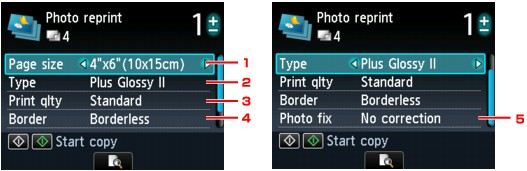

You can scan printed photos and print them all at one time.
 Note
Note-
When you use this function, load the original on the Platen Glass.
-
Display the Copy menu screen.
-
Load paper.
-
Select Photo reprint, then press the OK button.
-
Follow the on-screen instructions, then press the OK button to start scanning the printed photo.
The print settings confirmation screen is displayed.
-
Specify the settings as necessary.
-
Page size
Select the page size of the loaded paper.
-
Type (Media type)
Select the media type of the loaded paper.
-
Print qlty (Print quality)
Select print quality according to the original.
-
Border (Bordered/Borderless print)
Select bordered or borderless print.
-
Photo fix
Select No correction, Auto photo fix, or Fade restoration.
Note-
When No correction is selected, the machine prints the scanned image without correction.
-
When Auto photo fix is selected, the machine corrects the scanned image automatically.
-
When Fade restoration is selected, the machine corrects the scanned image that have faded over time.
-
-
-
Specify the number of copies by using the + or - button.
Note-
By pressing the center Function button, you can preview an image of the printout on the preview screen.
-
If appears on the photo, the printed photo may not be scanned properly. Rescan the printed photo.
-
-
Press the Color button for color printing, or the Black button for black & white printing.
The machine starts printing.
Note-
If the printed photo was not scanned properly, the confirmation screen asking you if you continue printing is displayed. By selecting Yes, the machine starts printing. If you rescan the photo, select No and scan the photo again.
-